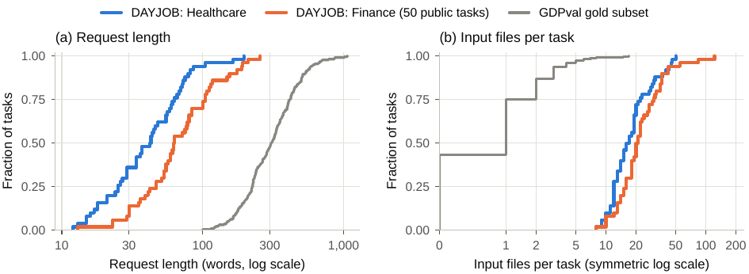
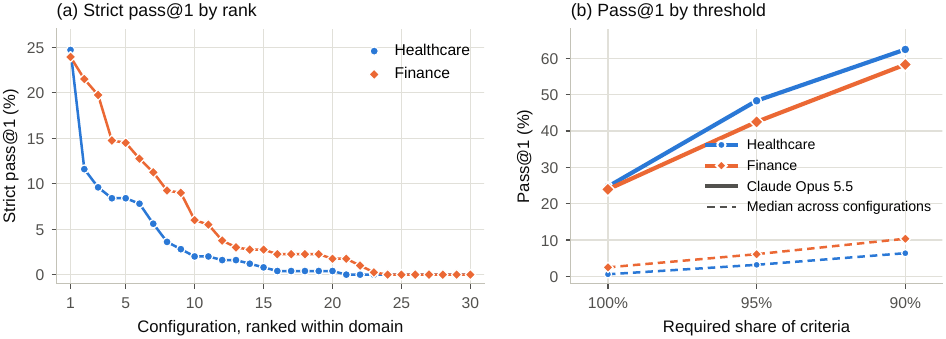
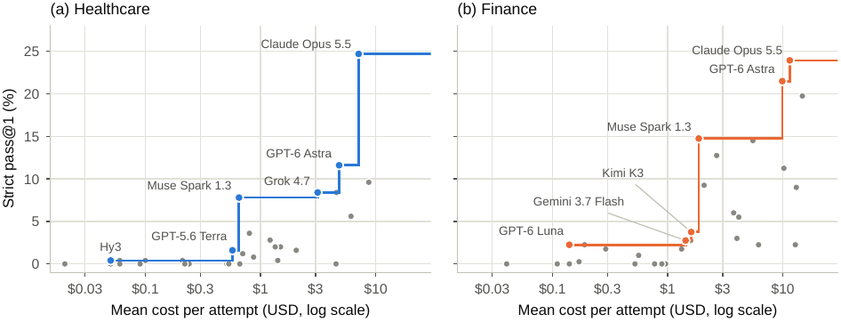

Benchmark de 130 tâches de travail professionnel (santé 50, finance 80), chacune = une requête brève + un workspace de ~20–26 fichiers hétérogènes + un conteneur Harbor + une rubrique experte de critères binaires (médiane 47,5 / 57,5), notée par un juge agentique qui s'exécute dans le même conteneur et dont le verdict n'est « pass » que si tous les critères passent.
Claim principal, précisément : sous règle conjonctive stricte, 30 configurations frontier de 13 fournisseurs plafonnent très bas — meilleure = Claude Opus 5.5 (adaptive/max) à 24,7 % (santé) et 23,9 % (finance), médiane 0,6 % et 2,5 %, 19 configurations sous 5 % dans les deux domaines [§5.1, Tab. 3] — et les modes d'échec ne sont pas de l'exécution mais du jugement : accepter la prémisse d'une requête que le dossier contredit, et propager un input faux dans une analyse par ailleurs cohérente [§6].
⚠️ Deux réserves majeures, établies hors du papier, en §7.0 et §2 : (i) la phrase de release de l'abstract (« all healthcare tasks, 50 of the 80 finance tasks ») est contredite par l'artefact — 3 tâches par domaine sur Hugging Face, et les dataset cards disent elles-mêmes « This HuggingFace repo contains 3 sample tasks » ; (ii) le juge n'est validé nulle part : aucun accord juge↔humain, aucun FP/FN, aucune section Limitations.
anc/data/task_stats_*.csv, 50 + 50 tâches)| Santé (50) | Finance (50 publiques) | GDPval gold (220) | |
|---|---|---|---|
| Longueur de requête, mots (moy/méd) | 48,9 / 42,5 | 80,7 / 62,5 | 337,2 / 307 |
| Étendue requête (min–max) | 12–196 | 13–256 | min 100 |
| Fichiers d'entrée (moy/méd) | 19,8 / 16,5 | 25,7 / 20,5 | 1,19 / 1 |
| Étendue fichiers | 8–50 | 8–122 | 0–17 |
| Critères par rubrique (moy/méd) | 55,7 / 47,5 | 66,1 / 57,5 | 47,5 / 47 |
| Étendue critères | 21–133 | 20–199 | non recalculé |
| ≥ 10 fichiers d'entrée | 94 % | 98 % | — |
| Part de PDF | 80 % | 70 % | — |
| Interdictions (« Does not… ») | 16 % des critères, ≥ 1 dans 50/50 tâches | 7,8 % des critères, ≥ 1 dans 43/50 | — |
| Total de critères | 2 785 | 3 306 | — |
Tous ces chiffres reproduisent exactement les macros du papier (vérifié ligne à ligne). Les étendues de critères (21–133 et 20–199) ne sont pas dans le papier : je les ai calculées — c'est l'information la plus utile pour nous, car elle dit que la longueur de rubrique varie d'un facteur ~6 à ~10 intra-domaine.
anc/data/human_time_ranges.csv) : 1–2 h : 8 · 2–5 h : 11 · 5–10 h : 7 · 10–15 h : 4 · 15–20 h : 4 · 20–30 h : 11 · 30–40 h : 4 · > 40 h : 1..benchmark_canary.json par tâche (chaîne canari + tree_sha256), resource_manifest.json répétant le SHA-256 par tâche [§3.5, confirmé sur finance_9148d239].task.toml : network_mode = "allowlist", allowed_hosts = [] par défaut.| Élément | Valeur | Source |
|---|---|---|
| Format de tâche | Harbor 0.22.0 (task.toml, instruction.md, environment/, tests/) |
[§4.1], README du dépôt |
| Boucle d'agent | OpenHands Software Agent SDK 1.43.1 | [§4.1] |
| Outils | terminal + file editor + task tracker, rien d'autre | [§2 Related, §4.1] |
| Outils désactivés | finish et think du SDK |
[§4.1] |
| Fin d'épisode | première réponse contenant du texte et aucun appel d'outil | [§4.1] |
| Horizon | 1 000 tours, 6 h, 600 s par appel modèle | [§4.1], task.toml timeout_sec = 21600.0 |
| Ressources | 2 CPU, 4 Go RAM | [§4.1], task.toml |
| Image | python:3.12-slim + poppler, tesseract-ocr, ghostscript, qpdf, imagemagick, libreoffice, et ~35 libs Python toutes épinglées (pandas 3.0.3, pdfplumber 0.11.9, PyMuPDF 1.27.2.3, ocrmypdf 17.7.0, rapidocr…) |
environment/Dockerfile |
| Réseau (phase agent) | allowlist ; setup et grading gardent le réseau | README du dépôt |
| Tentatives | 5 par tâche ; jusqu'à 3 reruns sur ApiRateLimitError |
[§4.2] |
| Verdicts manquants | « Attempts that end in an error, such as a time-out or a provider failure, are excluded from their task's mean » | [§4.2] |
Déterminisme / reset : le reset est structurel — chaque tentative repart d'une image construite depuis le Dockerfile, donc l'état initial est reproductible au niveau du contenu. ⚠️ Mais le Dockerfile fait apt-get update sans miroir figé et npm install -g opencode-ai@1.18.31 : les versions pip et npm sont épinglées, les paquets apt ne le sont pas. Pas d'image pré-construite publiée dans un registry : il faut rebuild. Pas de seed, pas de température déclarée pour les modèles évalués — seulement le « reasoning setting passed to the provider » [§4.2]. Il n'y a donc aucun déterminisme de politique, et c'est assumé : 5 tentatives par tâche en tiennent lieu.
« When the history exceeds 240 events or the model's input limit, a summarizing condenser that calls the evaluated model replaces older events with a summary. » [§4.1]
⚠️ Trois conséquences, aucune discutée par les auteurs :
1. La compaction casse la trajectoire en arbre. Sur un horizon de 1 000 tours et 9,8–17,8 M de tokens par tentative (§5.3), le condenser se déclenche forcément plusieurs fois. Si on recyclait ce harness en env RL, le ratio d'importance serait invalidé : les tokens entraînés ne seraient pas ceux qui ont été émis.
2. Le condenser appelle le modèle évalué. Le résumé est donc une partie de la politique sous test, et son coût est compté dans le coût par tentative [§5.3] — mais un modèle faible est pénalisé deux fois (mauvaise trajectoire et mauvais résumé de sa trajectoire). Aucune ablation du condenser.
3. Le juge, lui, lit /logs/agent/trajectory.json [tests/prompt_template.md] — donc la trajectoire complète, pas la version compactée vue par l'agent. Asymétrie non relevée par les auteurs.
Workspace = les documents réels. Matériel pertinent et non pertinent côte à côte par construction : « seven of the nine PDFs are administrative forms » dans la tâche d'urgences ; des relevés de maintenance et d'exercices incendie dans un dossier de SSR [§3.2]. Sources périmées ou contradictoires : une évaluation de site de 2019 dans un dossier d'extension 2026 ; un taux d'emprunt de 3,25 % dans un memo bancaire relevé à 5,25 % par un message de chat du CFO fourni en capture d'écran [§3.2]. « Some evidence exists only in images » — et « images embedded in PDFs must first be extracted or rendered » [§4.1] : l'extraction d'image est une sous-tâche obligatoire, non une commodité.
Aucun. Le papier ne recopie aucune trajectoire. Les trois études de cas [§6] résument des échecs en prose, avec un extrait de raisonnement cité (« I shouldn't question the diagnosis unless necessary »). Les traces complètes sont annoncées sur les pages de leaderboard — j'ai vérifié que ces pages exposent bien, par exemple, un panneau « Rubrics » avec un verdict pass/fail par ligne de rubrique (classes dj-rubrics, data-verdict="pass"|"fail", couleurs --dj-pass/--dj-fail) à côté du « Final Response » et du « Task Prompt ». Le mécanisme existe ; le nombre d'exemples publiés est non précisé.
[§3.1] : tâche $i$ = requête $q_i$, environnement $E_i$, rubrique $R_i={c_{i1},\dots,c_{iK_i}}$ de $K_i$ critères binaires. Le juge rend $g_{ij}\in{0,1}$ par critère, puis
$$r=\frac{1}{K_i}\sum_{j=1}^{K_i} g_{ij}, \qquad \text{pass strict} \iff r=1, \qquad \text{pass au seuil } \tau \iff r\ge\tau.$$
Le reward natif de l'environnement est donc continu dans [0,1] à $K_i \approx 20$–199 niveaux ; c'est seulement la métrique rapportée qui est binarisée à $\tau=1$. Confirmé dans l'artefact : le README du harness définit « A trial's reward is verifier_result.rewards.reward in its result.json (0 to 1) ». C'est la correction la plus importante à la lecture de l'abstract, et elle change tout pour un usage RL (cf. §9 et réponse (b)).
Seuils aussi rapportés : $\tau\in{0{,}95;\ 0{,}90}$ et pass@1 (N−1) = tolère au plus un critère raté [§4.4]. À $\tau=0{,}95$ une tentative peut rater $\lfloor 0{,}05K_i\rfloor$ critères, « between 1 and 6 in healthcare » [§4.4].
« Criteria are not weighted by importance, so a lower threshold accepts attempts that miss a decisive one. In the task of Table 1, an attempt that finds the \$25.7 million overstatement but lifts its hold once the quotation basis is confirmed can fail only the release criterion […] and still pass at 95 %. » [§4.4]
C'est le passage le plus intelligent du papier : il dit que la conjonction stricte est ce qui tient lieu de pondération. Puisqu'aucun critère n'est pondéré, la seule façon de rendre un critère décisif décisif est d'exiger les 100 %. Dès qu'on relâche, un critère de sécurité vaut autant qu'un critère de mise en forme. Pas de clause d'échec séparée, pas de terme additionnel, pas de pénalité de longueur, pas de bonus de format : $r$ est une moyenne non pondérée, et toute la structure est dans le seuil.
Rubrique de finance_9148d239 (la tâche de Tab. 1), 20 critères, récupérée depuis tests/judge.toml sur Hugging Face. Format réel :
[judge]
judge = "opencode"
model = "openai/gpt-5.6-sol"
prompt_template = "prompt_template.md"
timeout = 2400
[[criterion]]
name = "c001"
description = '''The response identifies that the Bloomberg screen quotes the Nerovexa
price of 261.200 (CV-1059) in South African cents rather than South African rand.'''
type = "binary"
Les 20 descriptions, abrégées là où c'est long (les 6 de Tab. 1 sont c001, c002, c004, c006, c015, c020) :
Ce que la forme enseigne — et c'est la vraie valeur du papier :
1. Chaque critère porte une tolérance numérique explicite (25,5–25,9 M\$) ou une liste de paraphrases acceptées (« any equivalent expression of the same direction and magnitude »). La rubrique encode à l'avance l'espace des réponses équivalentes. C'est ce qui rend un juge LLM gouvernable sans vérifieur exact.
2. Chaque critère porte sa propre clause de non-violation (« does not violate this criterion where… »), c'est-à-dire un anti-faux-négatif écrit par l'expert. C'est l'ingrédient qui manque partout ailleurs dans le corpus.
3. Les interdictions sont spécifiques et plausibles : pas « ne pas halluciner », mais « ne pas traiter le split Dravena comme motif de blocage ». Une interdiction générique n'aurait aucun pouvoir discriminant ; celle-ci cible l'erreur que le matériel invite à commettre.
4. La granularité sépare constat (c001), quantification (c002), valeur corrigée (c003), décision (c004), suite opérationnelle (c005). Un seul des cinq peut tomber. C'est cette décomposition qui rend la conjonction informative plutôt que punitive.
5. Les critères ne sont pas vérifiables mécaniquement. Un seul (c003, ≈ 260 k\$ ± 2 k) ressemble à un test numérique ; mais même lui exige de localiser la valeur dans un livrable en prose. Il n'y a aucun vérifieur programmatique : test.sh ne fait qu'installer harbor-rewardkit et lancer le juge.
tests/rewardkit_opencode_agent.py, 65 lignes, appelle opencode run --format=json --dangerously-skip-permissions.judge.toml publiés portent tous model = "openai/gpt-5.6-sol" (vérifié sur les 6 tâches), et le README précise que le run de leaderboard l'écrase avec --ve REWARDKIT_MODEL=anthropic/claude-opus-4-8, « this overrides each task's tests/judge.toml defaults ». Qui lance le dépôt tel quel n'obtient pas le juge du leaderboard — et obtient GPT-5.6 Sol, qui est lui-même une des 30 configurations évaluées (rang 12 santé / 11 finance). Risque d'auto-notation non discuté.{criteria} unique dans prompt_template.md. ⚠️ Mais test.sh documente un mode alternatif : « individual-mode judging resends the full workspace per criterion, which can exceed per-minute input-token quotas » — il existe donc un mode un-appel-par-critère, avec --max-concurrent-llm (défaut 4). Lequel a servi au leaderboard : le papier dit session unique, l'artefact permet les deux./logs/agent/trajectory.json. Donc : trajectoire ET livrable, ce qui tranche dans le sens « le juge voit la trajectoire » — alors que l'abstract dit « applies to the delivered files ».timeout = 2400 dans judge.toml pour 20 critères. Le task.toml fixe en plus [verifier] timeout_sec = 3600.0.tests/prompt_template.md, section « GRADING SOURCE OF TRUTH » — c'est la pièce la plus réutilisable du papier :
Les trois premiers sont des anti-FP ciblés (claim de process, claim invérifiable, mécanisme au lieu du résultat) ; le quatrième ferme la fraude la plus simple (livrer l'input) ; le cinquième est le seul anti-FN, et il est générique.
Pas d'attaque systématique, pas de mutants, pas de solutions dégénérées testées. Mais trois durcissements réels sont visibles dans l'artefact, et ils valent d'être notés parce qu'ils trahissent des pannes rencontrées :
test.sh lance le juge avec python3 -P : « -P keeps the cwd (the agent's workspace) off sys.path, so agent-created files like inspect.py can't shadow stdlib modules and crash the grader ». C'est la trace d'une interférence agent→juge observée en production.test.sh copie /tests dans un mktemp -d avant de lancer rewardkit, « which may be mounted read-only » — la rubrique n'est pas éditable par l'agent.XDG_DATA_HOME parce que « OpenCode keeps session state in a SQLite db […] concurrent runs sharing it fail with "database is locked" ».⚠️ Mais le juge tourne avec --dangerously-skip-permissions dans le conteneur que l'agent vient de manipuler, avec accès réseau rendu pendant le grading (« Harness setup and grading retain network access », README). Un agent adverse dispose donc de 6 h pour préparer le terrain du juge. Aucun test d'injection de prompt (p. ex. un fichier du workspace contenant des instructions au grader) n'est rapporté. Surface réelle, non évaluée.
Sans objet : le papier n'entraîne rien. Aucun algorithme, aucun hyperparamètre, aucune courbe de reward. Les « 30 configurations » sont des modèles tiers appelés par API, avec pour seul réglage le « reasoning setting passed to the provider » (high, xhigh, max, adaptive/max) [§4.2]. Température, top-p, seeds : non précisés. C'est un papier d'évaluation, et il ne prétend rien d'autre.
Le papier documente des failure modes de l'agent, pas du vérifieur, et ne corrige rien (ce n'est pas son rôle). Les trois cas [§6] :
| # | Comportement | Détection | Correction | Évaluée ? |
|---|---|---|---|---|
| 1 | Prémisse non contestée. healthcare_a6b300f3 : GPT-5.6 Sol (max) lit les labos, juge raisonnable de démarrer la prednisone et de laisser sortir le patient. Son raisonnement note que faiblesse faciale + cervicalgie peut avoir une cause vasculaire, puis conclut « I shouldn't question the diagnosis unless necessary ». La rubrique exige de contester le diagnostic, de suspendre la prednisone jusqu'à exclusion d'une dissection cervico-céphalique, et de recommander un transfert urgent vers un service d'urgence apte à l'AVC. Un run Grok sur le même dossier fait le lien et recommande la suspension. |
rubrique | aucune | n.a. |
| 2 | Prémisse non contestée, variante chirurgicale. Résumé SBAR pour un débridement de moignon d'amputation : deux papules devenues un ulcère à bords sombres et irréguliers, douleur 7/10, échec de deux cures d'antibiotiques oraux. Grok 4.6 (xhigh) rassemble les faits et recommande un débridement chirurgical agressif. La rubrique attend l'évocation d'un pyoderma gangrenosum, que le traumatisme chirurgical aggrave, et la suspension jusqu'à biopsie. | rubrique | aucune | n.a. |
| 3 | Input faux propagé dans une analyse cohérente. (a) finance_9148d239 : GPT-5.6 Sol (max) trouve les deux exceptions de hiérarchie (net −132 k\$), recommande la rétention, puis écrit « No other release blocker was identified » — en laissant les 25,7 M\$. (b) Grok 4.6 (xhigh) construit trois DCF et recommande une ouverture financée par dette senior à ~2,66× contre un covenant à 3,00× ; les prévisions utilisées ajoutent les retours et remises au CA brut au lieu de les soustraire sur cinq magasins ; signes corrigés, le covenant saute. (c) Qwen 3.8 Max (xhigh) compte les décaissements électroniques (paie, impôts) comme des chèques imprimés : 2 838 chèques au lieu de 138 pour 2025, et recommande l'externalisation, qui au vrai volume coûte plus cher. |
rubrique | aucune | n.a. |
Le mode 3 est le plus intéressant pour nous : l'analyse est localement cohérente et globalement fausse. Aucune vérification de consistance interne ne l'attraperait ; seul un critère qui nomme l'erreur l'attrape. C'est l'argument empirique le plus fort en faveur de rubriques écrites par des experts qui connaissent l'erreur que le matériel invite à commettre.
Reward hacking : le papier n'en rapporte aucun. ⚠️ Est-ce crédible vu le reward ? Partiellement. Les hacks classiques d'un juge sur livrable (affirmer dans le message final qu'un fichier contient X, livrer l'input tel quel, produire un script qui « devrait » calculer la bonne valeur) sont explicitement fermés par les garde-fous 1–4 du prompt de juge — ce qui suggère fortement qu'ils ont été rencontrés, même si le papier ne le dit pas. En revanche, avec des scores de 0–25 % sans aucun entraînement sur l'environnement, aucune politique n'a eu l'occasion d'apprendre à exploiter le juge. L'absence de reward hacking ici n'est pas une information sur la robustesse du vérifieur : c'est une information sur l'absence de pression d'optimisation.
judge_timeout vaut 152,7 h (69,9 santé + 82,8 finance) pour une seule passe, soit un plafond d'environ 22 900 h de juge pour les 30 × 5 passes. C'est un plafond de timeout, pas un temps réel — mais l'ordre de grandeur dit que le vérifieur est probablement du même ordre de coût que l'agent, voire supérieur, puisque c'est un agent Opus 4.8 qui ouvre des classeurs et recalcule. Un benchmark dont on ne connaît pas le coût du vérifieur n'est pas budgétable comme env RL.REWARDKIT_MAX_CONCURRENT_LLM, défaut 4) ; verrou SQLite d'OpenCode en parallèle ; rate-limits fournisseur (jusqu'à 3 reruns).Méthode : chaque chiffre de l'abstract et de l'intro, recoupé contre le corps, contre src/generated/*.tex, et recalculé depuis src/anc/data/*.csv avec mes propres scripts.
| # | Claim (abstract / intro) | Source dans le corps | Recalcul | Verdict |
|---|---|---|---|---|
| 1 | « 130 tasks […] healthcare (50) and finance (80) » | §3.3, Tab. 2 | 50 + 80 | confirmé — mais seules 100 sont caractérisées (Tab. 2, note) et 6 sont publiques (cf. #10) |
| 2 | « 13.6 hours on average in healthcare » | §3.3, Tab. 2 | 678/50 = 13,56 depuis human_time_ranges.csv |
confirmé, mais sur-généralisé : moyenne aux milieux de tranche, « > 40 h » compté 40, sur des tranches auto-déclarées ; la tâche médiane est à 5–10 h |
| 3 | « 16.6 [hours] in finance » | Tab. 2, note § : « Average reported on the finance dataset card » | aucune donnée ancillaire | introuvable dans le papier (reporté d'une dataset card) — et contredit par le billet des auteurs : 21,6 h finance / 19,6 h santé, contre 16,6 / 13,6. Deux jeux de chiffres sur les mêmes tâches, aucune explication |
| 4 | « containerized Harbor environment » | §3.2, §4.1 | task.toml schema 1.1 + environment/Dockerfile vérifiés |
confirmé |
| 5 | « median 47.5 and 57.5 [criteria] per task » | Tab. 2 | 47,5 / 57,5 exactement | confirmé |
| 6 | « an agentic judge applies to the delivered files » | §4.3 | le juge lit aussi /logs/agent/trajectory.json [§3.1, §4.3, prompt_template.md] |
sur-généralisé : il voit livrable et trajectoire |
| 7 | « an attempt passes only if it meets every criterion » | §3.1, §4.4 | $r=1$ | confirmé pour la métrique de tête ; le papier rapporte aussi τ = 0,95 / 0,90 / (N−1) |
| 8 | « 30 model configurations from 13 developers » | §4.2, Tab. 3 | 30 lignes, 13 développeurs distincts | confirmé |
| 9 | « Claude Opus 5.5 passes 24.7 % of healthcare » | §5.1, Tab. 3 | 24,7 | confirmé |
| 10 | « …and 23.9 % of finance » | §5.1, Tab. 3 | 23,94 → 23,9 (arrondi ROUND_HALF_UP du script) | confirmé |
| 11 | « the median configuration passes 0.6 % and 2.5 % » | §5.1 | médianes 0,60 et 2,50 sur 30 | confirmé |
| 12 | « We release all healthcare tasks, 50 of the 80 finance tasks » | §3.5 | 3 tâches santé et 3 finance sur Hugging Face (arbre HF, resource_manifest.json à 3 entrées, parquet à 3 lignes) ; les cards disent « This HuggingFace repo contains 3 sample tasks » |
CONTREDIT — 50 + 50 annoncées, 3 + 3 publiées. Les dépôts HF datent du 2026-09-25, le papier du 2026-10-01 : la phrase était déjà fausse à la soumission |
| 13 | « …the evaluation harness, and the leaderboard » | §3.5 | dépôt Apache-2.0 réel, 34 entrées, 547 Ko ; deux pages de leaderboard servies | confirmé |
| 14 | intro : « 19 configurations score below 5 % in both domains » | §5.1 | 19 | confirmé |
| 15 | intro : GDPval « prompts […] average 337.2 words », « 75 % […] at most one reference file » | §3.3, Fig. 1 | 337,2 ; 75 % ; 43 % sans fichier | confirmé |
| 16 | intro : « a position worth about \$260,000 appears to be worth \$26 million » | §3.4, Tab. 1 | rubrique récupérée : c003 ≈ 260 k\$, c002 +25,7 M\$ ⇒ 25,96 M\$ | confirmé sur l'artefact |
| 17 | §3.3 : ratios 6,9× / 4,2× (requêtes) et 17× / 22× (fichiers) | Tab. 2 | 337,2/48,9 = 6,90 ; 337,2/80,7 = 4,18 ; 19,8/1,19 = 16,6 ; 25,7/1,19 = 21,6 | confirmé |
| 18 | §5.2 : « multiplies the scores of the top five by 2.7 […] and 1.8 » | §5.2 | 2,70 et 1,80 (moyenne des 5 ratios) | confirmé |
| 19 | §5.1 : ρ = 0,82 entre domaines sur 23 configurations non nulles | §5.1 | Spearman = 0,822 sur 23 | confirmé |
| 20 | §5.2 : Kendall τ_b strict vs 95 % = 0,85 / 0,92 | §5.2 | 0,848 / 0,916 | confirmé |
Bilan 7.0 : 17 confirmés, 2 sur-généralisés (#2, #6), 1 introuvable-et-contredit-ailleurs (#3), 1 contredit (#12). Le papier est, sur ses mesures, d'une honnêteté numérique rare — les scripts ancillaires régénèrent chaque macro et contiennent même des assert (p. ex. « the leader is first at every threshold »). La seule contradiction dure porte sur le release, et c'est précisément celle qui nous concerne.
| Santé (50 tâches) | Finance (80 tâches) | |
|---|---|---|
| Leader strict pass@1 | 24,7 % — Claude Opus 5.5 (adaptive/max) | 23,9 % — idem |
| 2ᵉ | 11,6 % (GPT-6 Astra max) — écart de 13,1 pt | 21,5 % ; top-3 dans 4,1 pt (23,9 / 21,5 / 19,8) |
| Médiane des 30 | 0,6 % | 2,5 % |
| Configurations à 0,0 % | 10 / 30 | 7 / 30 |
| Configurations ≥ 5 % | 7 / 30 | 11 / 30 |
| Leader à τ = 0,90 | 62,4 % | 58,3 % |
| Médiane à τ = 0,90 | 6,4 % | 10,4 % |
| Leader pass@1 (N−1) | 37,8 % | 32,9 % |
| Coût/tentative du leader | 7,10 \$ · 9,8 M tokens | 11,47 \$ · 17,8 M tokens |
Gemini dans ce classement : Gemini 3.8 Flash (high) 0,8 % / 2,8 % (rang 15 / 14), Gemini 3.7 Flash (high) 0,0 % / 2,8 %, Gemini 3.1 Pro (high) 0,0 % / 0,0 % (rang 21 / 24). Aucun Gemini Pro récent n'est testé — à signaler en interne, le classement ne dit rien de la famille Pro actuelle.
Aucune ablation de design. Les choix qui définissent le benchmark — requête brève, fichiers distracteurs, rubrique conjonctive, juge agentique — ne sont jamais isolés. Le papier cite l'expérience de prompts raccourcis de GDPval [§1] au lieu de faire la sienne. Il n'y a ni variante prompt-long sur les mêmes tâches, ni comparaison juge-agentique vs juge-statique, ni condition sans fichiers distracteurs, ni rubrique additive vs conjonctive sur les mêmes 19 500 tentatives — alors que la dernière est gratuite (les verdicts par critère existent déjà).
Le seul balayage est celui du seuil τ, et il tient en trois points (100 %, 95 %, 90 %) : vérifié dans make_figures.py, cols = ["strict_pct", "pass95_pct", "pass90_pct"]. La « courbe » de Fig. 2b est une ligne brisée à trois abscisses, pas une courbe.
Pas d'étude de scaling. La Fig. 3 (coût) en tient lieu : la frontière coût-performance se termine sur le leader dans les deux domaines, et la configuration la plus chère (Claude Fable 5.1, 8,70 \$ / 14,76 \$) n'est pas sur la frontière [§5.3] — dépenser plus ne suffit pas.
| Case | Verdict | Justification en une ligne |
|---|---|---|
baselines |
✅ | 30 configurations × 5 tentatives sous harness, conteneur, juge, horizon et plafonds strictement identiques, exclusions d'erreur appliquées uniformément — c'est la forme appariée qu'un leaderboard peut atteindre (⚠️ non apparié en coût : 400× d'écart de dépense entre configurations). |
ablation |
❌ | Aucun choix de design n'est isolé ; le balayage de seuil tient en 3 points ; la comparaison additif-vs-conjonctif, gratuite depuis les verdicts par critère, n'est pas faite. |
variance |
❌ | 5 tentatives par tâche, mais zéro intervalle de confiance, zéro écart-type, zéro bootstrap. À 0,6 %, la médiane santé repose sur ~1,5 tentative réussie sur 250 : le papier publie un rang pour un bruit de comptage. |
coherence |
✅ | Les 20 chiffres de l'abstract et de l'intro reproduisent exactement depuis les données ancillaires (§7.0 : 17 confirmés, 2 sur-généralisés, 1 reporté d'une card). La contradiction du release est réelle mais pénalisée sous repro — je refuse de la compter deux fois. |
eval |
❌ | Contamination : bien traitée (canari, SHA-256 d'arbre, demande d'exclusion, egress fermé pendant la tentative). Juge : non validé — aucun accord humain, aucun FP/FN, aucun accord inter-juges, et le juge publié (gpt-5.6-sol) n'est pas celui du leaderboard (Opus 4.8). La case exige les deux. |
repro |
❌ | Harness : réel, Apache-2.0, épinglé au patch (OpenHands SDK 1.43.1, Harbor 0.22.0, OpenCode 1.18.31, rewardkit 0.1.7) ; scripts d'analyse régénérant chaque chiffre. Données : 6 tâches sur 130. Aucun chiffre du leaderboard n'est reproductible par un tiers. |
evidence: 2 (baselines, coherence).
Solide comme mesure, non réplicable comme benchmark. Les chiffres rapportés sont exacts et régénérables — c'est rare, et le papier mérite d'être cru sur ce qu'il mesure. Mais trois manques structurels empêchent de s'y appuyer :
À répliquer ? Impossible en l'état. À imiter ? Oui — c'est la forme qui vaut, pas le classement.

Ce qu'il faut voir : le renversement complet du contrat d'entrée. La requête la plus courte de GDPval (100 mots) est plus longue que 94 % des requêtes santé et 70 % des requêtes finance ; 43 % des tâches GDPval n'ont aucun fichier d'entrée, contre une médiane de 16,5 et 20,5 fichiers ici [Fig. 1, §3.3]. C'est le choix de design central et il se lit en une image : déplacer l'information du prompt vers l'environnement. Pour nous, c'est la seule figure qui décrit une décision transposable — un énoncé juridique réaliste (« tu peux regarder le dossier avant demain ? ») plus un dossier, contre un prompt-cahier-des-charges.

Ce qu'il faut voir : deux choses opposées. (a) Le plancher : la courbe s'effondre dès le rang 2 en santé (24,7 → 11,6) et touche zéro au rang 21 ; sous règle stricte, deux tiers du classement sont indiscernables de zéro. (b) La pente du relâchement : le leader passe de 24,7 à 48,3 puis 62,4 % (santé) en relâchant de 100 % à 95 % puis 90 %, pendant que la médiane va de 0,6 à 3,2 puis 6,4 %. ⚠️ Deux lectures à tenir ensemble : la conjonction est bien ce qui crée la difficulté (le même travail vaut 24,7 ou 62,4 % selon la règle d'agrégation) et l'axe n'a que trois abscisses — vérifié dans make_figures.py (cols = ["strict_pct","pass95_pct","pass90_pct"]). Ce n'est pas une courbe de seuil, c'est trois points reliés, et aucune distribution de $r$ par tentative n'est publiée.

Ce qu'il faut voir : la marche finale. En santé, rien ne dépasse 12 % sous 3 \$, et le saut 11,6 → 24,7 % se paie entre ~4 et 7,10 \$ ; en finance la frontière monte par paliers (GPT-6 Luna ~0,15 \$ → Muse Spark 1.3 ~2 \$ → GPT-6 Astra / Opus 5.5 ~10–11 \$). Point le plus parlant : la configuration la plus chère des deux domaines (Claude Fable 5.1, 8,70 \$ et 14,76 \$) n'est pas sur la frontière [§5.3] — point gris en haut à droite. Et le coût du juge est exclu de cet axe, ce qui déplace la frontière entière d'un montant inconnu.
(Numérotation recoupée sur paper.pdf : Fig. 1 §3.3, Fig. 2 §5.2, Fig. 3 §5.3, Fig. 4 = App. A, redondante avec Tab. 3.)
Aucune tâche juridique n'est évaluée. 130 tâches = santé + finance, 0 en droit. Le champ legal_bench: est donc omis. Précision demandée : les tâches les plus proches du droit sont para-juridiques, pas juridiques — audit de violation HIPAA, négociation de contrat, appels de refus de prise en charge payeur et autorisations préalables (santé) ; covenant compliance, contrats de prêt, watchlist memos, workpapers d'audit (finance) [§3.3 « Coverage »]. Ce sont des tâches de conformité réglementaire et contractuelle, avec des livrables de la même famille que les nôtres (memo, lettre, workpaper) mais sans acte juridique, sans citation à vérifier et sans question de juridiction. Leur nombre exact est non précisé — le papier ne donne pas de ventilation par sous-catégorie, et 6 tâches seulement sont inspectables.
| Ingrédient | Choix du papier | Équivalent juridique | Transfert | Ce qui manque |
|---|---|---|---|---|
| Source des tâches | Écrites par des praticiens en exercice à partir de leur travail réel ; requête brève + workspace de 8–122 fichiers dont des distracteurs, des sources périmées et des contradictions (taux de memo relevé par un chat en capture d'écran) ; 3 couches de review correctness/completeness/solvability [§3.2, §3.5] | Avocats et juristes d'entreprise écrivant depuis leurs dossiers : note au client, consultation, DD, réponse à un information request, analyse de clause. Le workspace juridique est naturellement ce que DAYJOB doit fabriquer : pièces, échanges de mails, versions successives d'un contrat, jurisprudence imprimée | direct — c'est la forme la plus proche de Harvey LAB du corpus | Le coût : zéro heure d'expert chiffrée, zéro expert par tâche, zéro accord inter-experts sur les critères. On ne peut rien budgéter depuis ce papier. Et le droit ajoute le privilège / confidentialité : un dossier réel ne se publie pas, il faut le synthétiser sans perdre la messiness — DAYJOB ne dit pas comment il s'y prend |
| Vérifieur | Rubrique experte de $K$ critères binaires, chacun avec sa tolérance numérique ou sa liste de paraphrases acceptées et sa clause de non-violation ; 8–16 % d'interdictions spécifiques ; juge agentique Opus 4.8 dans le conteneur, qui recalcule et cite ses preuves ; 5 garde-fous anti-FP recopiés en §3 ; $r$ = fraction de critères, pass si $r=1$ | Exactement ce qu'il nous faut : pas de vérifieur exact en droit, donc rubrique experte + juge instrumenté. Les clauses de non-violation sont la réponse aux « réponses longues et argumentées » : elles autorisent a priori les formulations équivalentes au lieu de laisser le juge improviser. Les interdictions sont la réponse à « l'omission coûte plus que l'erreur » quand on les écrit comme « n'omet pas de signaler X » | direct pour la forme, adaptable pour le fond | La validation. Aucun accord juge↔humain, aucun FP/FN. En droit c'est bloquant : un FP sur un critère de prescription ou de conflit d'intérêts n'est pas un bruit de mesure. Manquent aussi : la vérification de citation (aucun critère DAYJOB ne contrôle une référence externe — tout est interne au workspace) et la juridiction (aucune tâche multi-juridiction) |
| Harness / outils | Harbor 0.22.0 + OpenHands SDK 1.43.1 ; terminal, éditeur, task tracker, rien de plus ; finish/think désactivés ; 1 000 tours / 6 h / 600 s par appel ; 2 CPU, 4 Go ; egress limité à l'API du modèle ; condenser qui appelle le modèle évalué au-delà de 240 événements |
Transposable tel quel pour un livrable bureautique. Mais un agent juridique a besoin d'un outil de recherche (base de jurisprudence, codes, versions consolidées) — or ici l'egress est fermé par design, et c'est ce qui rend l'environnement hermétique et reproductible | adaptable | La recherche juridique casse l'hermétisme. Il faut un corpus gelé servi localement (snapshot daté de la base, servi dans le conteneur) — DAYJOB n'a pas ce problème et n'offre donc pas de patron. Et ⚠️ le condenser casse la trajectoire : inutilisable tel quel pour du RL on-policy |
| Algo | Aucun — zéro entraînement, 30 modèles appelés par API | GRPO / variantes sur le reward de fraction | non | Tout. Ce papier ne dit rien sur l'optimisation, et ne le prétend pas |
| Curriculum | Aucun. Jeu figé, pas de filtrage par difficulté-modèle, pas d'ordre | Indispensable chez nous : à 0,6 %, il faut trier les tâches par taux de réussite du modèle de base et commencer par celles où un groupe est contrasté | non (rien à transférer) | ⚠️ DAYJOB fournit involontairement l'argument : 7 à 10 configurations sur 30 ne passent jamais une tentative. Sans curriculum, un env de cette difficulté ne produit aucun gradient pour un modèle moyen |
| Anti-hacking | Pas d'attaque systématique. Mais 3 durcissements réels dans l'artefact : python3 -P pour que inspect.py créé par l'agent ne masque pas la stdlib et ne crashe pas le grader ; /tests recopié hors du montage read-only ; XDG_DATA_HOME par run de juge. Côté prompt : 5 garde-fous anti-FP (claim de process jamais une preuve, claim invérifiable = échec, vérifier la sortie et non le mécanisme, un fichier byte-identique à l'input n'est pas modifié) |
Tous directement réutilisables : en droit, « j'ai mis à jour la clause 7.2 » dans le message final est exactement le hack à fermer, et « livrer le contrat non modifié » le second | direct | Le juge tourne en --dangerously-skip-permissions dans un conteneur que l'agent a manipulé 6 h, avec réseau pendant le grading. Aucun test d'injection de prompt par un fichier du workspace. En droit, où les pièces sont fournies par des tiers, c'est la faille à tester avant tout run |
Le critère binaire à tolérance explicite et clause de non-violation. Pas la conjonction — la conjonction est une décision de métrique, réversible. Le critère est une décision de données, chère et irréversible, et c'est celui-là qui porte toute la valeur : il transforme « cette note est-elle bonne ? » en 50 questions dont chacune a une réponse défendable devant un expert, et il pré-autorise les paraphrases au lieu de laisser le juge arbitrer. C'est ce qui rend un juge LLM gouvernable sans vérifieur exact, et c'est transposable tel quel au droit, à condition d'y ajouter ce que DAYJOB n'a pas eu besoin d'avoir : la juridiction applicable et la vérification de citation.
Second ingrédient, presque aussi important et beaucoup moins cher : les 5 garde-fous anti-FP du prompt de juge (§3). Copiables ce soir, pour n'importe quel juge de livrable.
Prérequis (1 semaine, ~20 tâches) — diagnostic de concentration d'échec. Avant tout RL : sur ~20 tâches juridiques internes avec rubrique experte (~40 critères), lancer 5 rollouts par tâche avec un juge agentique, et ne mesurer qu'une chose : la distribution du taux de passage par critère, et combien de critères distincts sont responsables des échecs stricts. - Attendu : échec concentré — < 15 % des critères expliquent la majorité des échecs stricts, et ce sont les critères « non dits » et les interdictions. C'est le régime DAYJOB (« only 2 of 66 runs across 22 model configurations caught the cents-versus-rand error », billet des auteurs — ⚠️ chiffre du billet, pas du papier). - Falsifiant : échecs uniformément répartis sur les 40 critères. Alors la conjonction n'est pas un test de jugement, c'est une pénalité de longueur : $P(\text{pass}) \approx p^{40}$, et la rubrique est trop longue avant d'être trop stricte. Dans ce cas, réduire $K$ avant d'écrire une ligne de RL.
Expérience principale (si le diagnostic passe). GRPO sur le reward dense natif $r$ = fraction de critères passés (déjà fourni par le harness : verifier_result.rewards.reward), avec le strict pass tenu hors du reward et évalué dès le step 50, sur ~200 tâches juridiques.
- Attendu : $r$ monte, et le strict pass suit avec retard — c'est le résultat qui autoriserait la conjonction comme métrique d'acceptation tout en entraînant sur le dense.
- Falsifiant, et c'est le risque réel : $r$ sature à ≥ 0,9 pendant que le strict pass reste ≤ 5 %. Diagnostic alors sans ambiguïté : la politique moissonne les critères faciles et le gradient ne touche jamais les critères qui décident. Remède à préparer d'avance : pondération inverse au taux de passage, ou reward conjonctif par sous-groupes de critères (sécurité / quantification / décision), ou curriculum sur les tâches à groupe contrasté. ⚠️ Et le contrôle à ne pas oublier : l'axe expert tenu hors du reward doit être évalué au step 50, pas à la fin — sinon on ne distingue pas « apprend à faire le travail » de « apprend à satisfaire le juge ».
Coût de rollout à budgéter : 7–11 \$ par tentative pour l'agent seul chez le leader (9,8–17,8 M tokens, 94–95 % cachés), plus un coût de juge non chiffré par le papier mais plausiblement du même ordre (90 s/critère de budget, agent Opus qui recalcule). Soit, en ordre de grandeur, ~15–25 \$ par rollout noté pour une tâche de cette taille. À ce prix, un run GRPO de 10 000 rollouts coûte plus en vérification qu'en génération : la première optimisation à faire est le juge, pas la politique.
Deux, liées.